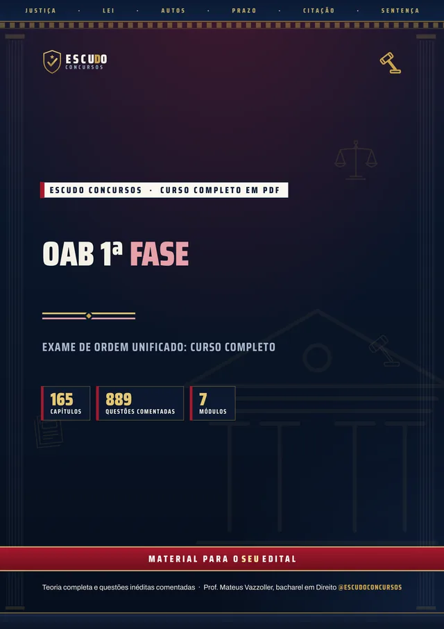
889questões
inéditas
Apostila OAB 1ª fase 2027 em PDF Feito do jeito que a FGV cobra
Você precisa de 40 acertos em 80 questões, e a FGV pergunta de um jeito que muito material não treina. Medimos 1.022 questões de 13 Exames de Ordem para descobrir como a banca pergunta, e planejamos cada capítulo em cima disso, com casos resolvidos, súmulas e teses conferidas na fonte e questões inéditas de 4 alternativas.
- 165capítulos
- 889questões comentadas
- 527casos resolvidos
- 1.745páginas
48º Exame com edital publicado · 1ª fase em 10/01/2027 · banca FGV
R$59,90
À vista, pagamento único, 12 meses de acesso. O Passe Anual (R$ 109,90) está logo abaixo.
- 100% em PDF, sem videoaulas
- Garantia de 7 dias
- Pagamento pela Hotmart
Material independente, sem vínculo com a OAB nem com a FGV.
A prova
80 questões, 4 alternativas e 40 para passar
A 1ª fase do Exame de Ordem Unificado é uma prova objetiva sem consulta, com 80 questões de 1 ponto cada e 4 alternativas (de A a D), das quais só uma é correta. Você é aprovado com 40 acertos, sem nota mínima por disciplina, em 5 horas de prova. O edital do 48º Exame foi publicado em 21/09/2026, e a 1ª fase é em 10/01/2027.
Pelo edital, no mínimo 15% da prova é de Estatuto da Advocacia e da OAB, Código de Ética e Disciplina, Direitos Humanos e Filosofia do Direito, e a resposta pode refletir a jurisprudência pacificada dos Tribunais Superiores. A lei que vale é a vigente na data de publicação do edital.
As 80 questões se dividem em 20 disciplinas em proporção fixa. Ética é o maior bloco (8 questões), seguida de Constitucional, Civil, Processo Civil, Penal e Processo Penal, com 6 cada. O curso foi montado nessa proporção.
- 80questões objetivas, 1 ponto cada
- 40acertos para ser aprovado
- 5 hde prova, sem consulta
- 20disciplinas, na proporção do edital
- 10/01/20271ª fase do 48º Exame
| Disciplina | Questões na prova | Capítulos no curso |
|---|---|---|
| Ética Profissional (Estatuto, Regulamento Geral e Código de Ética) | 8 | 16 |
| Filosofia do Direito | 2 | 4 |
| Direito Constitucional | 6 | 13 |
| Direitos Humanos | 2 | 4 |
| Direito Eleitoral | 2 | 4 |
| Direito Internacional | 2 | 4 |
| Direito Financeiro | 2 | 4 |
| Direito Tributário | 5 | 10 |
| Direito Administrativo | 5 | 10 |
| Direito Ambiental | 2 | 4 |
| Direito Civil | 6 | 14 |
| ECA | 2 | 4 |
| Direito do Consumidor | 2 | 4 |
| Direito Empresarial | 4 | 8 |
| Direito Processual Civil | 6 | 12 |
| Direito Penal | 6 | 12 |
| Direito Processual Penal | 6 | 12 |
| Direito Previdenciário | 2 | 4 |
| Direito do Trabalho | 5 | 10 |
| Direito Processual do Trabalho | 5 | 9 |
| Total (mais 3 capítulos de abertura) | 80 | 162 |
Medimos as provas
Como a FGV cobra: 1.022 questões analisadas
Antes de escrever, analisamos 1.022 questões de 13 Exames (do 33º ao 47º; o 42º e o 45º saíram da FGV em imagem e ficaram de fora). Medimos o tamanho do enunciado, quantas colocam você no papel do advogado, de onde vem a resposta e quais temas voltam. O resultado desenhou cada capítulo.
O caso é a questão. O enunciado tem cerca de 90 palavras, com personagens, e um detalhe do caso (uma idade, um prazo, quem tem a iniciativa) muda a resposta. Em 2021 e 2022, 20% das questões colocavam você como advogado consultado pelo cliente. Em 2025 e 2026 já são 39%.
A súmula às vezes vence o código. Em 91% das questões a resposta vem da lei e em 6% da súmula ou tese, e em algumas a súmula contraria a letra do código. Por isso cada capítulo de matéria traz o quadro de súmulas e teses.
O número decide. Prazo, idade, fração e quórum decidiram 12% das questões, e 35% das de Direito do Trabalho, 31% das de Eleitoral e 31% das de Previdenciário.
O formato é próprio. A prova tem 4 alternativas, nunca pediu "assinale a incorreta" (0 em 1.022) e quase não usa afirmativas I, II e III (3 em 1.022). Treinar com questão de concurso, de outro formato, acostuma você ao modelo errado.
- 91%se resolvem pela lei
- 6%se resolvem por súmula ou tese
- 12%dependem de um número
- 39%no papel do advogado em 2025 e 2026 (eram 20% em 2021 e 2022)
- 0comandos "assinale a incorreta" em 1.022 questões
Páginas reais do PDF
Veja por dentro
Toque numa página para ver em tamanho maior. São páginas do capítulo 4, Advocacia, no primeiro módulo.
A capa1.745 páginas no padrão visual ESCUDO, do 33º ao 48º Exame. 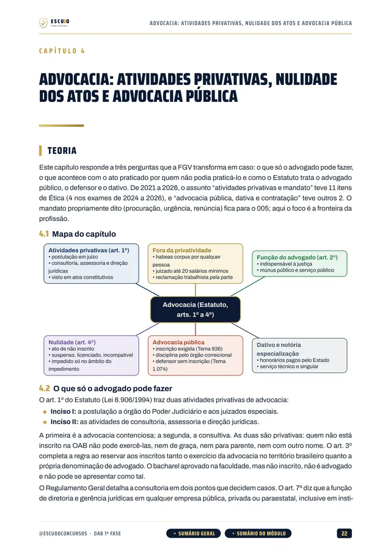
Mapa do capítuloCada capítulo abre com o mapa do assunto e a teoria com o dispositivo legal. 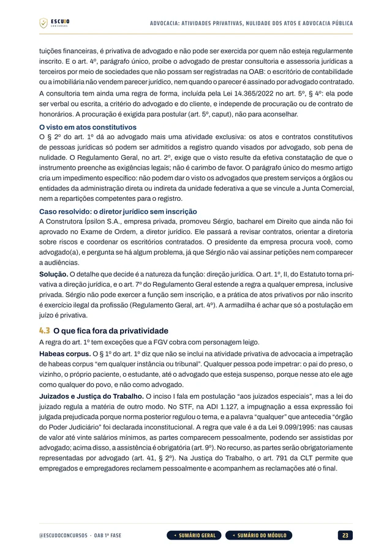
Caso resolvidoO cliente chega com um problema e você decide o detalhe que muda a resposta. 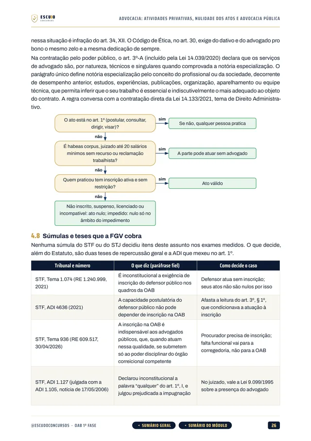
Súmulas e tesesO quadro de cada capítulo traz o tribunal, o número, o que diz e como cai no caso. 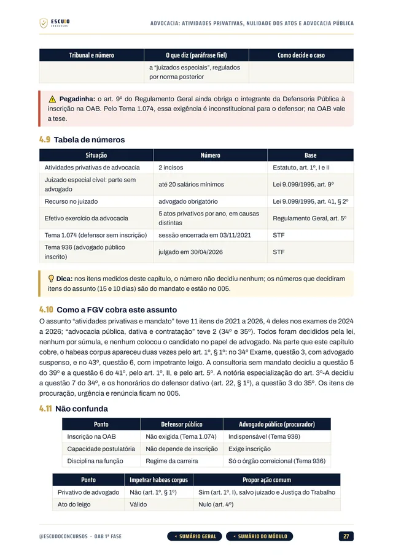
Tabela de númerosPrazos, idades e quóruns reunidos por assunto, e o Não confunda dos pares que a banca troca. 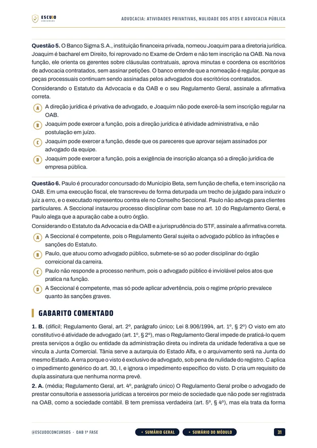
Questões e gabaritoQuatro alternativas, caso concreto e gabarito comentado alternativa por alternativa.
100% em PDF · Garantia de 7 dias · Pagamento pela Hotmart
O que você recebe
Tudo o que a prova pede
Curso em PDF organizado em 7 módulos, com 1.745 páginas no padrão visual ESCUDO, para ler no computador, no tablet, no celular ou no app da Hotmart. Não há videoaulas.
165 capítulos nas 20 disciplinas, na proporção das 80 questões da prova: 3 de abertura e 162 de matéria. Ética tem o maior peso.
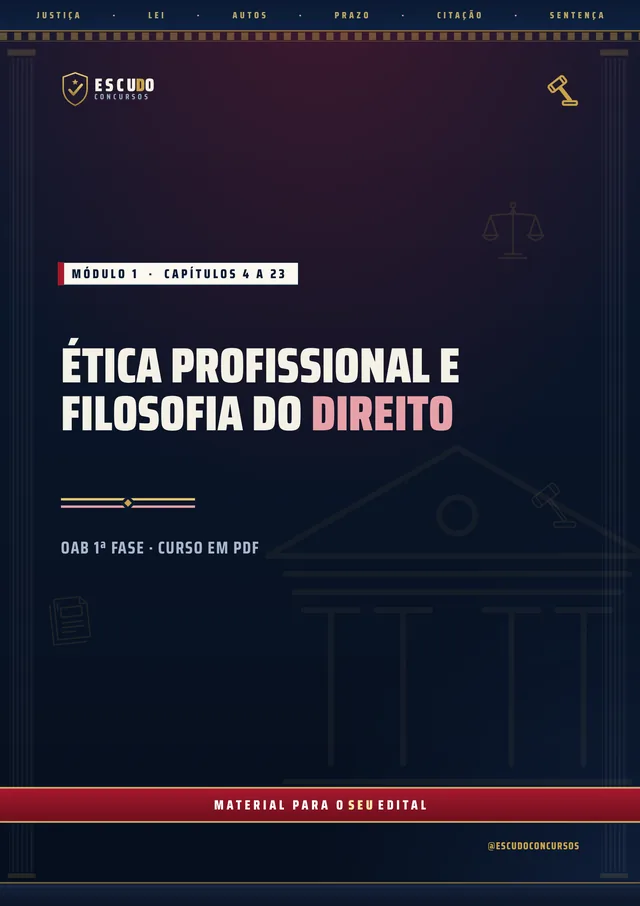
527 casos resolvidos no papel do advogado consultado pelo cliente, do jeito que a prova pergunta, nos 162 capítulos de matéria.
Quadro Súmulas e teses que a FGV cobra em cada capítulo de matéria: 370 súmulas distintas, conferidas na fonte oficial do tribunal, com o aviso claro quando a súmula diverge da letra da lei.
Tabela de números em cada capítulo de matéria, com prazos, idades, frações e quóruns reunidos por assunto, e o quadro Não confunda dos pares que a banca troca.
889 questões inéditas no formato da FGV, com caso concreto e 4 alternativas, todas com gabarito comentado alternativa por alternativa. Foram escritas para este curso e conferidas na lei. Nenhuma é cópia de prova antiga.
Navegação clicável: do sumário você vai direto ao módulo e ao capítulo, e volta pelo botão do rodapé.
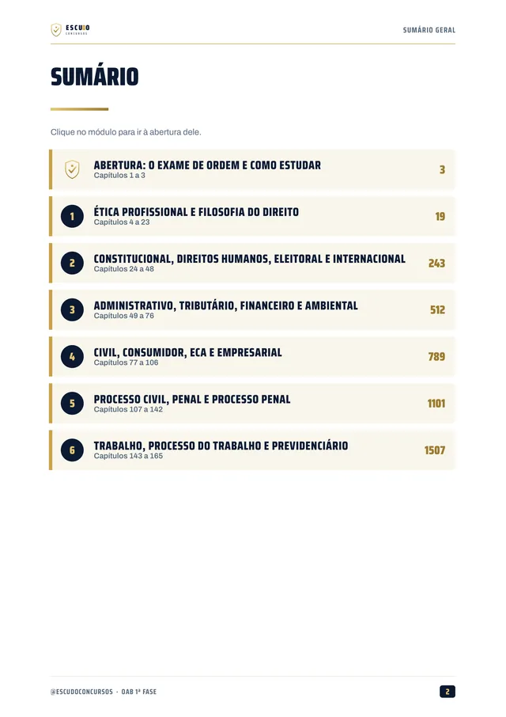
Bônus incluídos: "O que mais cai na OAB", o ranking dos assuntos por disciplina, e o Plano de 6 semanas para o 48º Exame, que vai da data de hoje até a prova de 10/01/2027.
Área de membros
Os módulos do curso
| Módulo | Conteúdo | Liberação |
|---|---|---|
| M0 Comece aqui | Capítulos 001 a 003 (como é o Exame, como a FGV cobra e o plano de estudo). Bônus: O que mais cai na OAB e Plano de 6 semanas para o 48º. Bônus: PDF completo para baixar e imprimir | Na compra; o PDF completo no 8º dia |
| M1 Ética e Filosofia | Capítulos 004 a 023: Estatuto da Advocacia, Regulamento Geral, Código de Ética e Filosofia do Direito | Na compra |
| M2 Constitucional, Direitos Humanos, Eleitoral e Internacional | Capítulos 024 a 048 | Na compra |
| M3 Administrativo, Tributário, Financeiro e Ambiental | Capítulos 049 a 076 | Na compra |
| M4 Civil, Consumidor, ECA e Empresarial | Capítulos 077 a 106 | Na compra |
| M5 Processo Civil, Penal e Processo Penal | Capítulos 107 a 142 | Na compra |
| M6 Trabalho, Processo do Trabalho e Previdenciário | Capítulos 143 a 165 | Na compra |
Passe Anual OAB 1ª fase
Tudo o que a 1ª fase pede, em um acesso só
O Passe Anual reúne o curso e os materiais de treino e de revisão do 48º Exame, e ainda abre um módulo para os 49º e 50º Exames: a Revisão e os simulados de cada exame entram ali quando o edital sair. São 12 meses de acesso, pela área de membros da Hotmart.
Comprados separados: R$ 159,40
R$109,90
Economia de R$ 49,50 (31%)
À vista, pagamento único. Garantia de 7 dias.
| Item | Avulso |
|---|---|
| Curso OAB 1ª fase (165 capítulos, 889 questões, PDF completo) | R$ 59,90 |
| Revisão Expressa do 48º Exame | R$ 19,90 |
| 4 Simulados do 48º Exame | R$ 34,90 |
| Caderno de Súmulas e Teses | R$ 19,90 |
| Ética OAB em 1 dia | R$ 14,90 |
| Plano de 120 dias | R$ 9,90 |
| Módulo "49º e 50º Exames": a Revisão e os simulados de cada exame entram quando o edital sair | incluído |
| Soma dos itens vendidos separados | R$ 159,40 |
| Passe Anual | R$ 109,90 |
A economia de R$ 49,50 é só a diferença entre a soma dos itens do 48º Exame vendidos separados e o preço do Passe. A Revisão e os simulados dos 49º e 50º Exames dependem de os editais saírem, e entram no módulo próprio quando isso acontecer.
Para completar o estudo
Materiais da ESCUDO para a 1ª fase
Cada um destes materiais é vendido à parte, na Hotmart, e todos já vêm dentro do Passe Anual. O curso de R$ 59,90 não depende deles: a teoria, os casos e as 889 questões estão no curso.
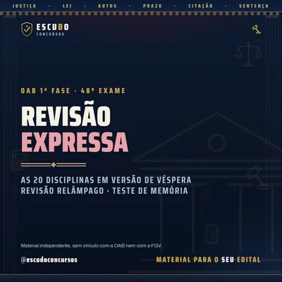
Revisão Expressa do 48º ExameR$ 19,90As 20 disciplinas em versão de véspera, em 266 páginas.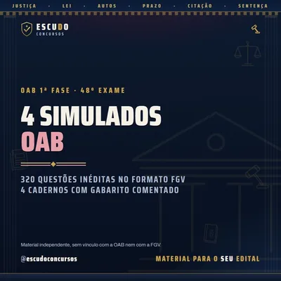
4 Simulados do 48º ExameR$ 34,90320 questões inéditas, 80 por simulado, com gabarito comentado.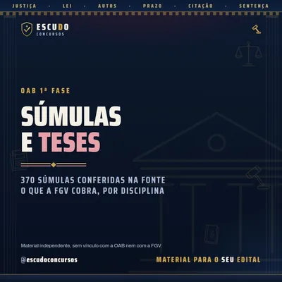
Caderno de Súmulas e TesesR$ 19,90Por disciplina, com o caso típico e o aviso quando a súmula diverge da lei.- Ética OAB em 1 diaR$ 14,90O maior bloco da prova em um dia de estudo, com 60 questões comentadas.
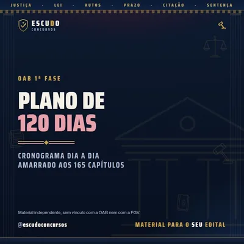
Plano de 120 diasR$ 9,90Cronograma dia a dia ligado aos 165 capítulos, mais o Plano de 6 semanas para o 48º.
Para quem é
Feito para quem vai fazer a 1ª fase
Para quem vai fazer a 1ª fase do 48º Exame, em 10/01/2027, e para quem pretende fazer os exames seguintes, e quer estudar com casos, súmulas e questões no formato da FGV.
- Quem está inscrito no 48º Exame e quer usar bem as semanas até a prova.
- Quem reprovou na 1ª fase e quer um material diferente do que já usou.
- Quem estuda no celular, no intervalo do trabalho ou do estágio, e não tem tempo para horas de vídeo.
- Não é para quem procura a 2ª fase: o curso é só da 1ª fase.
- Não é para quem quer só videoaulas, e não garante aprovação. Material independente, sem vínculo com a OAB nem com a FGV.
Garantia de 7 dias
Você tem 7 dias de garantia pela Hotmart. Se não for o que você esperava, pede o reembolso pela própria Hotmart, dentro do prazo.
Sem surpresa na área de membros
O que libera e quando
Na compra do curso: os módulos M0 a M6 em PDF, com os bônus "O que mais cai na OAB" e o Plano de 6 semanas. É o curso inteiro, para começar a estudar no mesmo dia.
8 dias após a compra: o PDF completo para imprimir. É o mesmo conteúdo dos módulos num arquivo só, liberado depois da garantia de 7 dias.
Passe Anual: na compra, o curso e todos os materiais do 48º Exame (Revisão, 4 simulados, Caderno de Súmulas e Teses, Ética em 1 dia e Plano de 120 dias), também com o PDF completo no 8º dia.
Módulo dos 49º e 50º Exames (só no Passe): a Revisão e os simulados de cada exame entram quando o edital sair.
O PDF completo aparece bloqueado na área de membros até o 8º dia: não é conteúdo faltando, é a liberação programada.
Dúvidas
Perguntas frequentes
Qual exame este curso cobre?
O 48º Exame de Ordem, com 1ª fase em 10/01/2027, e os seguintes, dentro dos 12 meses de acesso. A lei do curso é a vigente na data de corte do 48º Exame (21/09/2026), e o que mudou depois vem sinalizado como "vale a partir do 49º". A regra da prova é a lei vigente na data de publicação do edital de cada exame.
Tem videoaula?
Não. É um curso 100% em PDF, feito para ler, grifar e resolver questões, no celular ou no computador, pela área de membros da Hotmart.
As questões são de provas antigas da FGV?
Não. As 889 questões são inéditas, escritas para este curso no formato da FGV (caso concreto, 4 alternativas, comando positivo). As provas antigas serviram só para medir o estilo e o que mais cai: nenhuma questão delas foi copiada.
As respostas e as súmulas foram conferidas?
Sim. As questões foram resolvidas às cegas por revisores e conferidas na lei. As 370 súmulas e teses do curso foram conferidas na fonte oficial do tribunal (STF, STJ e TST), e a súmula cancelada ou superada não entra como vigente.
O que a FGV cobra, segundo o que vocês mediram?
Medimos 1.022 questões de 13 Exames (do 33º ao 47º, sem o 42º e o 45º, que saíram em imagem). Em 91% a resposta vem da lei e em 6% da súmula ou tese, às vezes contra a letra do código. O número (prazo, idade, quórum) decide 12%. Nenhuma pede "assinale a incorreta".
Qual a diferença entre o curso e o Passe Anual?
O curso (R$ 59,90) é a teoria e as 889 questões, com 12 meses de acesso. O Passe Anual (R$ 109,90) soma ao curso a Revisão Expressa e os 4 simulados do 48º Exame, o Caderno de Súmulas e Teses, o Ética OAB em 1 dia e o Plano de 120 dias, e abre o módulo dos 49º e 50º Exames, onde a Revisão e os simulados de cada exame entram quando o edital sair.
Como recebo o material?
O acesso é imediato depois da confirmação do pagamento, pela área de membros da Hotmart (web ou app). O PDF completo para baixar e imprimir é liberado no 8º dia.
Garantem aprovação?
Não. Nenhum material garante aprovação. O curso organiza o estudo e o treino, e o resultado depende do que você estuda, resolve e revisa.
O material é da OAB ou da FGV?
Não. É da ESCUDO Concursos e não tem vínculo com a OAB nem com a FGV. "OAB", "Exame de Ordem" e "FGV" aparecem só no texto, para dizer a que prova o curso se refere.
Serve para a 2ª fase?
Não. O curso é só da 1ª fase (prova objetiva).
E se eu não gostar?
Você tem 7 dias de garantia pela Hotmart. Se não for o que você esperava, pede o reembolso.
OAB 1ª fase · 48º Exame
Comece hoje pela prova inteira
R$59,90
À vista, pagamento único. Acesso imediato por 12 meses.
- 100% em PDF
- Garantia de 7 dias
- Pagamento pela Hotmart
Quer tudo em um acesso só? Veja o Passe Anual por R$ 109,90.
Material para a SUA prova. ESCUDO Concursos. Material independente, sem vínculo com a OAB nem com a FGV.